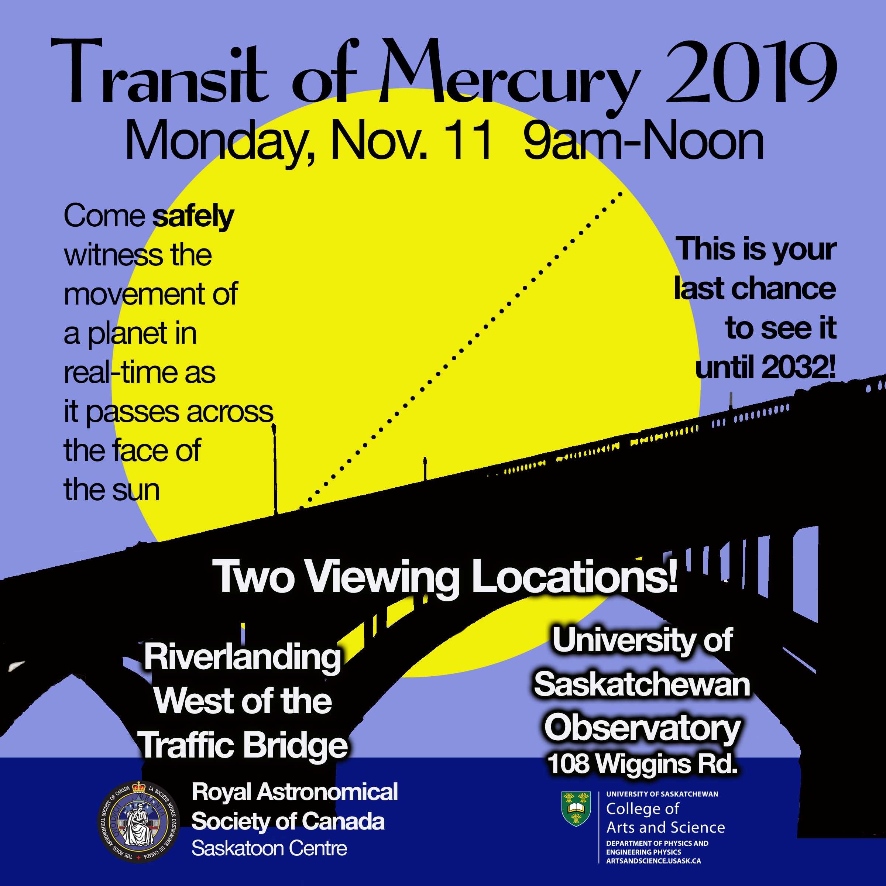

|
|

RASC Saskatoon Centre, Public & Media Events
All events are free of charge and open to the general public unless otherwise noted
Public events are in green text.
Centre member-only events are shown black text.
Selected astronomical events of interest are in purple text. Organized club or public events are not necessarily planned for these events.
2019
OCTOBER
October 4 - Random Acts of Astronomy - Members will have their telescopes set up at River Landing between the Traffic and Buckwold bridges! October 4 is also International Observe the Moon Day. 7:00 - 9:00 pm. Open to the public.
October 5 - Random Acts of Astronomy - event back-up date, if Oct. 4 is cancelled for weather. Members will have their telescopes set up at River Landing between the Traffic and Buckwold bridges! 7:00 - 9:00 pm. Open to the public.
October 21 - RASC General Meeting - Free admission. 8:00 - 9:30 pm. Room 175 Physics Building, U of S campus. [This meeting was advertised as Oct. 14 in the Sept. newsletter.]
7:00 pm - RASC Executive Meeting. (Members may attend the Executive meeting as observers if they wish.)
8:00 pm - Meet & Greet Social
8:15 pm - Warm-up Program: Annual Election of Offices of the RASC Centre - Please attend, volunteer, nominate and vote! All positions are open this year.
8:30 pm - Warm-up Program: What's in the Sky This Month? Marcel Muller-Goldkuhle will let us know what's up in the sky!
8:45 pm - Main Program: The 2019 General Assembly, National Council Meeting & the David Dunlop Observatory. Les Dickson will speak about the 2019 RASC General Assembly at York university, the council meeting at the GA and his tour of the Davod Dunlop Observatory.
9:45 PM - Visual Observing for Beginners Section at U of S Observatory. Jim Goodridge will be leading beginning observing sessions at the observatory for new members and beginning observers. Easy projects for eyes, binoculars & telescopes. No charge.
9:45 pm - After Meeting Meeting Social at Alexander's restaurant (Cumberland Ave.) if you'd like.
October 26 - Sleaford Observatory Annual Open House - - Observing starts at 7:30 p.m. and goes to 11 p.m. or so.
Open to the general public.This is the back-up date to the cancelled Sept. 28 date.
For attendees to the Sleaford Open House:
-Please park on south side of road only (Observatory side)
-Please avoid the use of white lights while at Sleaford
-Please walk slowly and carefully as the Sleaford yard is uneven and has some gopher holes.

(Click here for a BW poster.)
NOVEMBER
November 11 - Transit of Mercury - Morning transit that will be in progress as the sun rises. Visible from Saskatchewan. An RASC event:

November 18 - RASC General Meeting - Free admission. 8:00 - 9:30 pm. Room 175 Physics Building, U of S campus.
7:00 pm - RASC Executive Meeting. (Members may attend the Executive meeting as observers if they wish.)
8:00 pm - Meet & Greet Social
8:15 pm - Warm-up Program: What's in the Sky This Month? Marcel Muller-Goldkuhle will let us know what's up in the sky!
8:30 pm - Main Program: The 2019 Saskatchewan Summer Star Party Speaker tbd
9:45 PM - Visual Observing for Beginners Section at U of S Observatory. Jim Goodridge will be leading beginning observing sessions at the observatory for new members and beginning observers. Easy projects for eyes, binoculars & telescopes. No charge.
9:45 pm - After Meeting Meeting Social at Alexander's restaurant (Cumberland Ave.) if you'd like.
November 21 - 22 - Observers are advised to monitor the
alpha-Monocerotids (AMO) shower. The maximum occurs the late evening of
Nov. 21 near midnight (November 22, 06h UT). All past outbursts were
brief - just minutes to hours long. The expected ZHR is variable,
usually around 5 per hour, but has produced an outburst up to about 400
per hour. In spite of this, predictions indicate a possible short
outburst of ZHR of about 110 as night falls on August 12. For more
information, see https://www.imo.net/files/meteor-shower/cal2019.pdf
November 23 - Observer's Group Night at the Sleaford Observatory - Observing starts at dusk. Get there early and set up for a great night of observing! Members and their guests only.
DECEMBER
>
December 16 - RASC General Meeting Christmas Social - TENTATIVE DATE - RASC
Christmas Potluck supper. Brink your favourite dish and enjoy
the evening with members of the Saskatoon RASC. Open to RASC members
and their friends.6:30 - 9:00 pm. Room 175 Physics Building, U of S
campus. (No RASC Executive meeting.)
December 22 - Ursids Meteor Shower (015 URS) - Usually with a ZHR
of 10, predictions indicate an increase to ZHR = 30 on December 22 at
21:00 CST (Dec. 23, 03h UT.) This shower is associated with comet
8P/Tuttle. Meteors are detectable December 17 – 26. The waxing moon
doesn't interfere with earlier observation of this shower. For more
information, see https://www.imo.net/files/meteor-shower/cal2019.pdf
December 28 - Observer's Group Night at the Sleaford Observatory - Observing starts at dusk. Get there early and set up
for a great night of observing! Members and their guests only.
2020
JANUARY
January 20 - RASC General Meeting - Free admission. 8:00 - 9:30 pm. Room 175 Physics Building, U of S campus.
7:00 pm - RASC Executive Meeting. (Members may attend the Executive meeting as observers if they wish.)
8:00 pm - Meet & Greet Social
8:15 pm - Warm-up Program: Program tbd
8:30 pm - Main Program: tbd
9:45 PM - Visual Observing for Beginners Section at U of S Observatory. Jim Goodridge will be leading beginning observing sessions at the observatory for new members and beginning observers. Easy projects for eyes, binoculars & telescopes. No charge.
9:45 pm - After Meeting Meeting Social at Alexander's restaurant (Cumberland Ave.) if you'd like.
FEBUARY
Febuary 24 - RASC General Meeting - Free admission. 8:00 - 9:30 pm. Room 175 Physics Building, U of S campus.
7:00 pm - RASC Executive Meeting. (Members may attend the Executive meeting as observers if they wish.)
8:00 pm - Meet & Greet Social
8:15 pm - Warm-up Program: Program tbd
8:30 pm - Main Program: tbd
9:45 PM - Visual Observing for Beginners Section at U of S Observatory. Jim Goodridge will be leading beginning observing sessions at the observatory for new members and beginning observers. Easy projects for eyes, binoculars & telescopes. No charge.
9:45 pm - After Meeting Meeting Social at Alexander's restaurant (Cumberland Ave.) if you'd like.
MARCH
March 16 - RASC General Meeting - Free admission. 8:00 - 9:30 pm. Room 175 Physics Building, U of S campus.
7:00 pm - RASC Executive Meeting. (Members may attend the Executive meeting as observers if they wish.)
8:00 pm - Meet & Greet Social
8:15 pm - Warm-up Program: Program tbd
8:30 pm - Main Program: tbd
9:45 PM - Visual Observing for Beginners Section at U of S Observatory. Jim Goodridge will be leading beginning observing sessions at the observatory for new members and beginning observers. Easy projects for eyes, binoculars & telescopes. No charge.
9:45 pm - After Meeting Meeting Social at Alexander's restaurant (Cumberland Ave.) if you'd like.
APRIL
April 20 - RASC General Meeting - Free admission. 8:00 - 9:30 pm. Room 175 Physics Building, U of S campus.
7:00 pm - RASC Executive Meeting. (Members may attend the Executive meeting as observers if they wish.)
8:00 pm - Meet & Greet Social
8:15 pm - Warm-up Program: Program tbd
8:30 pm - Main Program: tbd
9:45 PM - Visual Observing for Beginners Section at U of S Observatory. Jim Goodridge will be leading beginning observing sessions at the observatory for new members and beginning observers. Easy projects for eyes, binoculars & telescopes. No charge.
9:45 pm - After Meeting Meeting Social at Alexander's restaurant (Cumberland Ave.) if you'd like.
MAY
May 25 - RASC General Meeting - Free admission. 8:00 - 9:30 pm. Room 175 Physics Building, U of S campus.
7:00 pm - RASC Executive Meeting. (Members may attend the Executive meeting as observers if they wish.)
8:00 pm - Meet & Greet Social
8:15 pm - Warm-up Program: Program tbd
8:30 pm - Main Program: An MRI on the Space Station - Dr. Gord Sarty, Dept. of Psychology, U of Sask.
9:45 PM - Visual Observing for Beginners Section at U of S Observatory. Jim Goodridge will be leading beginning observing sessions at the observatory for new members and beginning observers. Easy projects for eyes, binoculars & telescopes. No charge.
9:45 pm - After Meeting Meeting Social at Alexander's restaurant (Cumberland Ave.) if you'd like.
JUNE
June 15 - RASC General Meeting - Free admission. 8:00 - 9:30 pm. Room 175 Physics Building, U of S campus.
7:00 pm - RASC Executive Meeting. (Members may attend the Executive meeting as observers if they wish.)
8:00 pm - Meet & Greet Social
8:15 pm - Warm-up Program: Program tbd
8:30 pm - Main Program: tbd
9:45 PM - Visual Observing for Beginners Section at U of S Observatory. Jim Goodridge will be leading beginning observing sessions at the observatory for new members and beginning observers. Easy projects for eyes, binoculars & telescopes. No charge.
9:45 pm - After Meeting Meeting Social at Alexander's restaurant (Cumberland Ave.) if you'd like.
JULY
July tbd - Alberta Star BQ - Calgary's annual star party and BBQ at Eccles Ranch near Caroline, Alberta.
Details will be announced at a later date.
AUGUST
[Tentative info - subject to change] August 12 - Perseid Meteor Shower (007 PER) - The peak should
occur at August 12, 8:00 pm CST (Aug. 13, 02h UT.) The first quarter
moon on August 7 allow the observers to record the early night of the
shower until about Aug. 5, but the peak occurs with a very bright moon
in the sky. In spite of this, predictions indicate a possible short
outburst of ZHR of about 110 as night falls on August 12. For more
information, see https://www.imo.net/files/meteor-shower/cal2020.pdf
August 19 - August 24 - 24nd Annual Saskatchewan Summer Star Party at Cypress Hills - See Star Party Pages - sidebar.
Open to anyone.
SEPTEMBER
September 21 - RASC General Meeting - Free admission. 8:00 - 9:30 pm. Room 175 Physics Building, U of S campus.
7:00 pm - RASC Executive Meeting. (Members may attend the Executive meeting as observers if they wish.)
8:00 pm - Meet & Greet Social
8:15 pm - Warm-up Program: Program tbd
8:30 pm - Main Program: tbd
9:45 PM - Visual Observing for Beginners Section at U of S Observatory. Jim Goodridge will be leading beginning observing sessions at the observatory for new members and beginning observers. Easy projects for eyes, binoculars & telescopes. No charge.
9:45 pm - After Meeting Meeting Social at Alexander's restaurant (Cumberland Ave.) if you'd like.
[Tentative info - subject to change] September 24 - Possible Epsilon Geminid meteor outburst An
outburst of dozens of meteors "poured" in the sky as seen from Western
Europe on Sept. 25 at 04:55 UT (Sept. 25 10:55 pm CST.) Watch for
this possible mini-storm on the NE horizon this year. The outburst time
favours North America.
September tbd - Northern Prairie Star Party - Edmonton's annual star party at Black Nugget Lake, Alberta.
Details will be announced at a later date.
September 18 - 20 - Alberta Star Party - Calgary's annual star party at Starland Recreational Area, Alberta. (North of Drumheller.)
Details will be announced at a later date.
September tbd - Spruce Woods Star Party - Winnipeg's annual star party at Spruce Woods Provincial Park, Manitoba. Dates and
details will be announced at a later date.
September 28 - Observer's Group Potluck the Sleaford Observatory - TENTATIVE -
Observing starts 5:00 p.m. Get there early, eat and set up for the
Annual Sleaford Open House, later tonite! Members and their guests only.
September tbd - Sleaford Observatory Annual Open House - TENTATIVE - Observing starts at 7:30 p.m. and goes to 11 p.m. or so.
Open to the general public.
For attendees to the Sleaford Open House:
-Please park on south side of road only (Observatory side)
-Please avoid the use of white lights while at Sleaford
-Please walk slowly and carefully as the Sleaford yard is uneven and has some gopher holes.
OCTOBER
October 19 - RASC General Meeting - Free admission. 8:00 - 9:30 pm. Room 175 Physics Building, U of S campus.
7:00 pm - RASC Executive Meeting. (Members may attend the Executive meeting as observers if they wish.)
8:00 pm - Meet & Greet Social
8:15 pm - Warm-up Program: Annual Election of Offices of the RASC Centre - Please attend, volunteer, nominate and vote! All positions are open this year.
8:30 pm - Main Program: tbd
9:45 PM - Visual Observing for Beginners Section at U of S Observatory. Jim Goodridge will be leading beginning observing sessions at the observatory for new members and beginning observers. Easy projects for eyes, binoculars & telescopes. No charge.
9:45 pm - After Meeting Meeting Social at Alexander's restaurant (Cumberland Ave.) if you'd like.
October 26 - Observer's Group Night at the Sleaford Observatory - Observing starts at dusk. Get there early and set up for a
great night of observing! Members and their guests only.
NOVEMBER
November 18 - RASC General Meeting - Free admission. 8:00 - 9:30 pm. Room 175 Physics Building, U of S campus.
7:00 pm - RASC Executive Meeting. (Members may attend the Executive meeting as observers if they wish.)
8:00 pm - Meet & Greet Social
8:15 pm - Warm-up Program: Program tbd.
8:30 pm - Main Program: tbd
9:45 PM - Visual Observing for Beginners Section at U of S Observatory. Jim Goodridge will be leading beginning observing sessions at the observatory for new members and beginning observers. Easy projects for eyes, binoculars & telescopes. No charge.
9:45 pm - After Meeting Meeting Social at Alexander's restaurant (Cumberland Ave.) if you'd like.
November 21 - 22 - Observers are advised to monitor the
alpha-Monocerotids (AMO) shower. The maximum occurs the late evening of
Nov. 21 near midnight (November 22, 06h UT). All past outbursts were
brief - just minutes to hours long. The expected ZHR is variable,
usually around 5 per hour, but has produced an outburst up to about 400
per hour. In spite of this, predictions indicate a possible short
outburst of ZHR of about 110 as night falls on August 12. For more
information, see https://www.imo.net/files/meteor-shower/cal2020.pdf
November 16 - Observer's Group Night at the Sleaford Observatory - Observing starts at dusk. Get there early
and set up for a great night of observing! Members and their guests only.
DECEMBER
December 13 - RASC General Meeting Christmas Social - TENTATIVE DATE - RASC
Christmas Potluck supper. Brink your favourite dish and enjoy
the evening with members of the Saskatoon RASC. Open to RASC members
and their friends.6:30 - 9:00 pm. Room 175 Physics Building, U of S
campus. (No RASC Executive meeting.)
December 22 - Ursids Meteor Shower (015 URS) - Usually with a ZHR
of 10, predictions indicate an increase to ZHR = 30 on December 22 at
21:00 CST (Dec. 23, 03h UT.) This shower is associated with comet
8P/Tuttle. Meteors are detectable December 17 – 26. The waxing moon
doesn't interfere with earlier observation of this shower. For more
information, see https://www.imo.net/files/meteor-shower/cal2019.pdf
December 28 - Observer's Group Night at the Sleaford Observatory - Observing starts at dusk. Get there early and set up
for a great night of observing! Members and their guests only.
2021
AUGUST
August 4 - August 9 - 25nd Annual Saskatchewan Summer Star Party at Cypress Hills - See Star Party Pages - sidebar.
Open to anyone.
2044
AUGUST
August 17 - 22 or August 22 - 28 - Saskatchewan Summer Star Party 2044 - 48th Annual SSSP at Cypress Hills Provincial Park. Program TBD. Stay tuned!
August 22 - Total Eclipse of the Sun - Visible from the Saskatchewan Summer Star Party. SSSP'44 is on the Centre Line.
.........
For More Information on Events & the RASC:
See our Newsletter
or email us.
For information specifically on Saskatchewan Summer Star Party (SSSP), email us.
Or see Starparty homepage.
Click here to join the Saskatoon Centre.
Something wrong on this page? Email the Events Page editor.
Sleaford Observatory
One of the benefits of membership with our Centre is access to our
remote viewing site at Sleaford. The telephone number at the Sleaford site is 255-2045. For users
of our site, here is some reading material (pdf format):
Light Pollution Abatement Committee
We are fighting light pollution! The Saskatchewan Light Pollution Abatement Committee
is a collaboration between the Saskatoon and Regina RASC Centres and a number of other
key people in the province. See: Light Pollution in Saskatchewan.
Observing Group
The RASC Saskatoon Centre has an active Observing Group. Contact the Observing
Group Coordinator
for details of the group's activities.
The Observing Group has an Observer's Yahoo Group for observing discussions, announcements and notices.
Observing Aids
- Chatfield Binocular Challenge List
You can earn you binocular certificate by observing 35 of the 40
objects on this list, created by Darrell Chatfield. Once you have
started, register with the newsletter editor, Tenho Tuomi, to get your
name added to the challenge list on page 10 of the Saskatoon Skies
newsletter.
- Messier Marathon List
Don Machholz provides a great ordered listing for the Messier Marathon on his website.
National RASC Activities
The Royal Astronomical Society of Canada has many activities nationwide.
RASC Membership Activities
Here's a list of RASC member contributions to astronomy:
-
SASKATCHEWAN
AMATEUR ASTRONOMER DISCOVERS COMET! Comet
Petriew! Congratulations to Regina astronomer Vance Petriew who
discovered the comet at the 2001 Saskatchewan Summer Star Party!
IAUC update number 2 on
Comet Petriew has been released giving more post discovery
information.
-
CHANT MEDAL.
In 2001,
Rick Huziak received the prestigious Chant Medal. Congratulations Rick! We are
very proud of your accomplishments in amateur astronomy and are very
lucky to have you around. Rick is also the recipient of the
AAVSO
Director's Award, presented to him at the 92nd AAVSO Tuscon Conference.
-
Saskatoon Centre RASC Astrophoto Page. Great astrophotos by our members.
-
Rick Huziak's Great
Canadian Observing Challenge.
-
Rick Huziak's Geosynchronous Satellite Page
- Data from Tenho Tuomi's magnetometer
at Lucky Lake, Saskatchewan.
- Video Videos of the January 5, 2008 fireball, from the
camera "fireball2" and from the camera
"fireball3".
|

{kind=link}